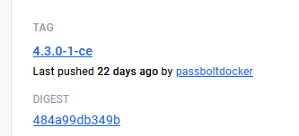

Locally Testing Passbolt
Checkout passbolt project
Expand with docker-compose with mailpit example.
Setting up your local test
Retrieve data from production
Get a copy of the database
From the production database
Level 5
Level 6
sudo -i
cd /var/www_data/passbolt
docker exec -i passbolt-db-1 bash -c \
'mysqldump -u${MYSQL_USER} -p${MYSQL_PASSWORD} ${MYSQL_DATABASE}' > \
passbolt-20231102.sql
Get copy of the keys
docker cp passbolt-passbolt-1:/etc/passbolt/gpg/serverkey_private.asc \
serverkey_private-<date>.asc
docker cp passbolt-passbolt-1:/etc/passbolt/gpg/serverkey.asc \
serverkey-<date>.asc
Copy files locally
Use WinSCP / scp / etc. You’ll like need to give your login permissions
chown -R <username> serverkey*20231102.asc
Copy to local passbolt project
Setup .env
The URL will need to be https:// and include port 9483 for local testing
Copy .env.local.example to .env
Populate variables for local testing:
PASSBOLT_GPG_SERVER_KEY_FINGERPRINT<see-below>PASSBOLT_KEY_EMAIL<name@domain.com>SQL_DUMP_FILE<name-of-exported-prod-db-file.sql>
Retrieving key fingerprint
sudo gpg --show-keys <public-serverkey.asc-from-before> | \
grep -Ev "^(pub|sub|uid|$)" | tr -d ' '
Update local hosts file
Update your local hosts file for the value you provided in APP_FULL_BASE_URL
Create a local browser test
- Create a separate profile in Firefox/Chrome as testing will override your current Passbolt plugin configuration
Performing an upgrade
Updating local docker-compose
-
Create new feature branch. I normally forward the email from Passbolt announcing a new version to the helpdesk so there is a ticket to reference
-
Determine latest version from: https://hub.docker.com/r/passbolt/passbolt/tags
- We want the latest tag that looks like
<major>.<minor>.<patch>-<build>-ce

- We want the latest tag that looks like
-
Compare
docker-compose.yamlto https://github.com/passbolt/passbolt_docker/blob/master/docker-compose/docker-compose-ce.yaml for version/configuration changes- The
env_file,${DB_PASSWORD},APP_FULL_BASE_URLand ports9480:80customisations are deliberate and required for our setup. - Most likely to change is the database version dependency
db: image: mariadb:10.11 - The
-
Update Passbolt
image:indocker-compose.yamlto tag above... passbolt: image: passbolt/passbolt-4.3.0-1-ce ...
Testing upgrade
Cleanup first
If you’ve done an upgrade before, you’ll need to remove all volumes so that it’s truly a fresh install.
This destroys all data without confirmation. Do not run anywhere else.
docker compose down -v
Start passbolt
cd /path/to/passbolt/project
docker compose up -d
Copy keys into container
cd /path/to/passbolt/project
docker cp serverkey_private-20231102.asc \
passbolt-passbolt-1:/etc/passbolt/gpg/serverkey_private.asc
docker cp serverkey-20231102.asc \
passbolt-passbolt-1:/etc/passbolt/gpg/serverkey.asc
Ensure permissions are set correctly
docker exec -it passbolt-passbolt-1 chown www-data:www-data \
/etc/passbolt/gpg/serverkey.asc
docker exec -it passbolt-passbolt-1 chown www-data:www-data \
/etc/passbolt/gpg/serverkey_private.asc
docker exec -it passbolt-passbolt-1 chmod 440 \
/etc/passbolt/gpg/serverkey.asc
docker exec -it passbolt-passbolt-1 chmod 440 \
/etc/passbolt/gpg/serverkey_private.asc
Start account recovery
- Navigate to
https://passbolt.dev.test:9480/recoverin the new browser profile - Accept the unsecure local SSL certificate warning
- Provide email. This should be your email
- Open http://localhost:8025 to retrieve the email
- Click start recovery
- Download the extension
- Allow install
- Click Next on passbolt congratulations screen
- Supply your private key
- Enter your password
- Generate a new security token
- You should now be logged in
Test new install
From browser
- Edit a password and view it in plaintext
- Text search box
- Go to users and check group membership
From command line
sudo -i
cd /path/to/passbolt/directory
## Start a shell in the docker container
docker exec -it passbolt-passbolt-1 /bin/bash
## inside docker terminal
## Start www-user shell
su -s /bin/bash www-data
## Check data integrity
./bin/cake passbolt datacheck --hide-success-details
## Check version is up-to-date
./bin/cake passbolt version
If all this passes, we should be good to do the live upgrade
Clean-up files
## Delete containers and volumes
docker compose down -v
- Delete downloaded
*.ascfiles - Delete downloaded
*.sqlfiles